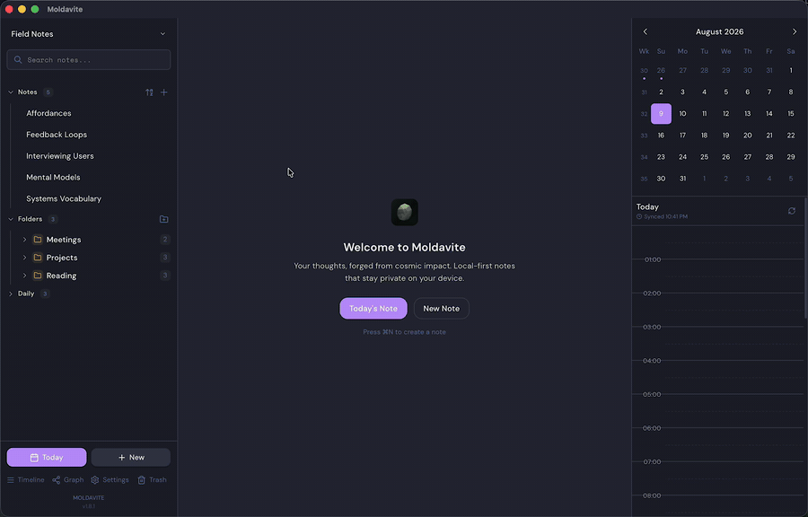
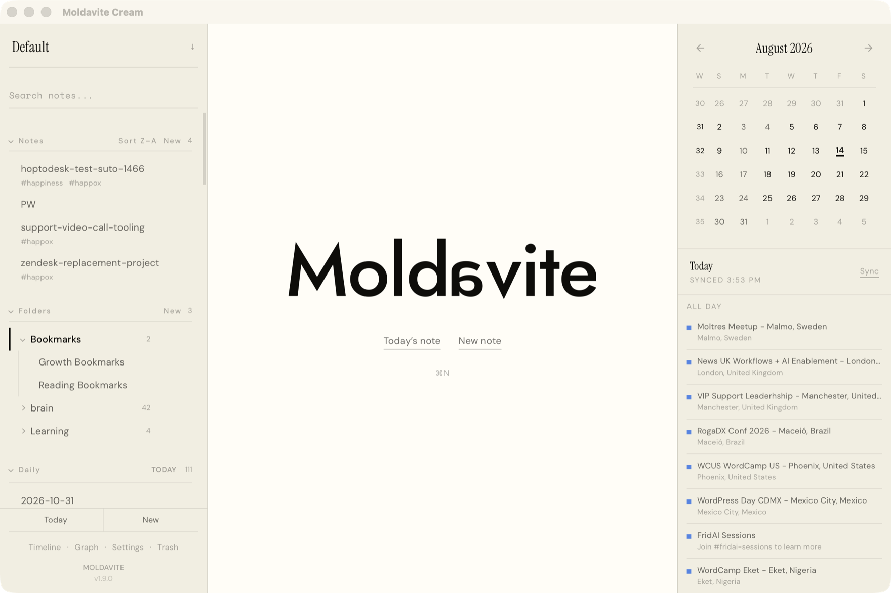
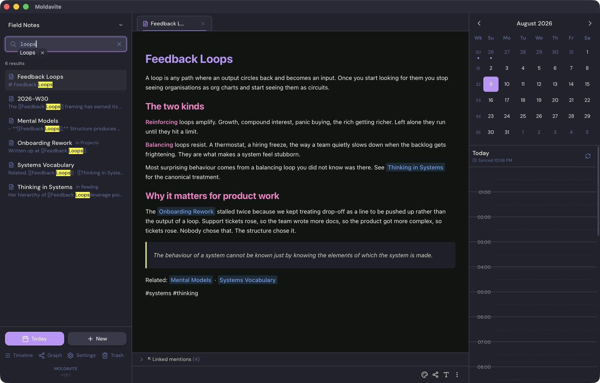
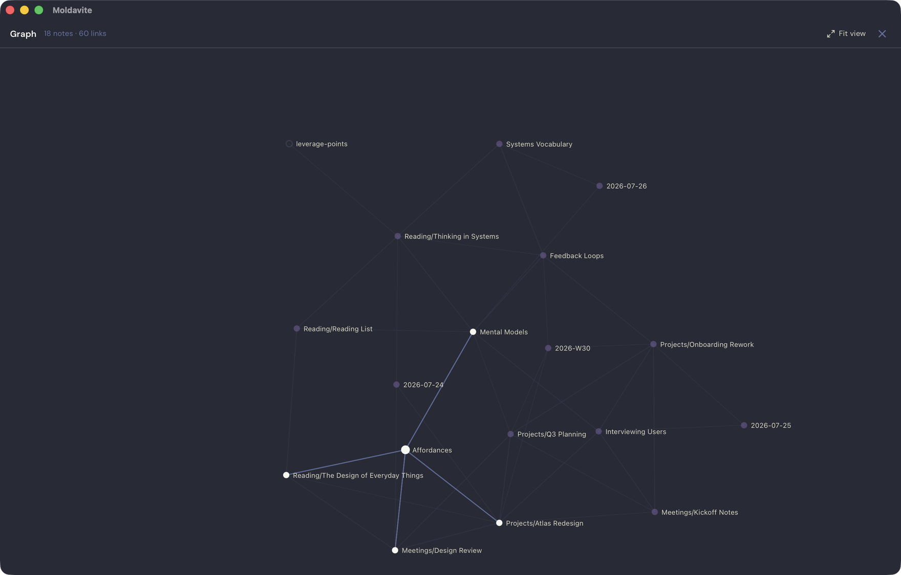
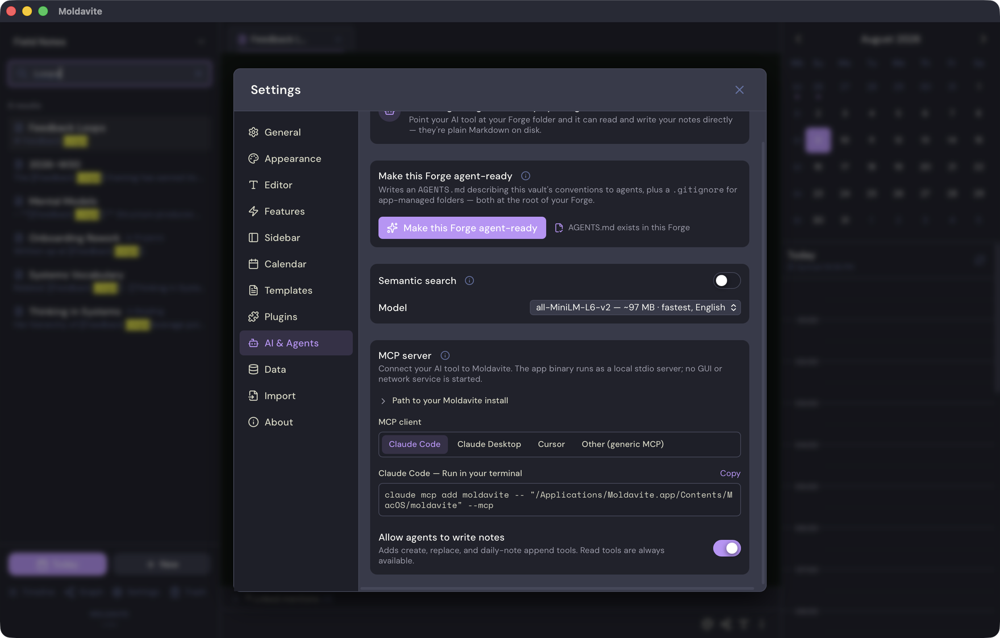

Homebrew
One command
The cask installs Moldavite and links its binary onto your PATH.
brew install --cask mauropereiira/moldavite/moldavite
Local Markdown notes for macOS
Moldavite keeps every note as a Markdown file on your Mac, with local search and a built-in bridge for the AI tools you choose.
Apple Silicon and Intel Mac · Free and MIT licensed


Install
Both routes install the same signed and notarized app.
Homebrew
The cask installs Moldavite and links its binary onto your PATH.
brew install --cask mauropereiira/moldavite/moldavite
Disk image
Open the latest release, download the macOS disk image, and move the app to Applications.
Open the latest releaseUpdates are verified inside the app before installation.
Your files
A Forge is a folder you can open in Finder. Git and other Markdown tools can use it too.
Daily, weekly, and standalone notes live beside images and templates. Each Forge keeps its own plugins and local search index.
Notes use plain Markdown with optional YAML frontmatter. Moldavite preserves frontmatter keys from other tools when it saves.
Moldavite writes a temporary file, flushes it, applies owner-only permissions, and renames it into place.
A Forge can live in iCloud Drive, Dropbox, Syncthing, or git. Disk changes reload clean notes, while active edits get a clear conflict choice and a preserved copy.
Connect your AI
The app binary includes an MCP server. It runs as a local process and reads the active Forge through seven narrow tools.
claude mcp add moldavite -- moldavite --mcp
The Homebrew cask puts moldavite on your PATH. Settings also provides
client-specific snippets with the full app path.
Companion project
The companion pack gives skill-capable AI clients practical workflows for a Moldavite Forge. Each skill works with the same local file model.
MCP tools
Write access stays off until you enable it in AI & Agents settings.
| Access | Tool | What it does |
|---|---|---|
| Read | list_notes |
Lists note paths and locked-note placeholders. |
| Read | read_note |
Reads one unlocked note by its validated Forge path. |
| Read | search_notes |
Runs keyword search or the ready local semantic index. |
| Read | get_backlinks |
Finds notes that link to a selected note. |
| Write | create_note |
Creates a new Markdown note without overwriting a file. |
| Write | write_note |
Replaces the body of an existing unlocked note. |
| Write | append_to_daily_note |
Appends Markdown to a daily note and creates it when needed. |
Locked notes are refused. Client paths are validated before every file operation.
File-capable agents can use a Forge directly. One action in Settings writes an
AGENTS.md with the folder rules and a .gitignore for
app-managed data.
Inside the app
Real screens from the current macOS app.



Rich editing, Markdown shortcuts, tabs, slash commands, templates, and images.
Daily and weekly notes, quick switching, a timeline, and read-only calendars.
Locked notes, seven-day trash, manual encrypted archives, and safe Obsidian import.
Signed updates arrive quietly and show the release notes after installation.
Search and graph
Search scans the current Forge, while wiki-links and backlinks show how one note connects to the rest.
Search is a live scan designed for collections around a thousand notes. Results include snippets and exclude locked or trashed notes.
Choose one of three models after a clear download prompt. Indexing and queries then run on your Mac. Semantic search requires Apple Silicon, while Intel Macs keep keyword search.
Moldavite rewrites inbound wiki-links across the Forge, updates backlinks, and keeps open tabs pointed at the renamed file.
Plugins
Plugins run in separate Web Workers. Every useful capability crosses a bridge that Moldavite controls.
Per-plugin worker
There is no DOM, raw app IPC, or browser network API inside the worker. Commands and editor insertion use the host bridge. App notifications do too.
Read unlocked note metadata and Markdown.
Ask the host to make HTTPS requests to approved domains.
Use a plugin-specific namespace in the macOS Keychain.
General note writes and custom panels sit outside the plugin API.
Privacy
Moldavite has no account system, hosted notes service, analytics, or telemetry. These are the six ways the app can reach the network.
GitHub receives a request for the signed release manifest after launch and once a day.
GitHub receives a registry request only when you open the community browser.
Hugging Face receives one model-file request after you opt in. Note data stays local.
Google receives an access token and date range while a read-only account is connected.
A plugin can reach exact HTTPS hosts that appear on its permission sheet.
The first-party plugin sends the selected note to the site you configured when you publish.
Apple Calendar stays inside macOS EventKit. Locked notes use AES-256-GCM encryption and remain outside search, plugins, and MCP tools.
Read the complete privacy policyFree and open source
Keep your Markdown files on your Mac. Connect more tools when they fit your work.